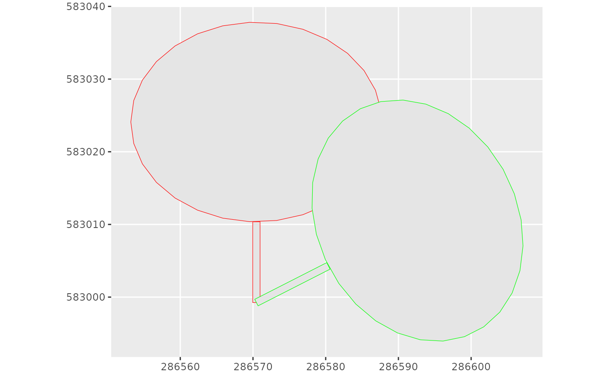

Rotate the input polygon with a given angle and around a fix point. Function adapted from Jeffrey Evans' 'rotate.polygon' function: https://github.com/jeffreyevans/spatialEco/blob/master/R/rotate.polygon.R
Arguments
- p
Polygon (POLYGON or sfc_POLYGON)
- angle
Angle in degrees in the clockwise direction (numeric)
- fixed
Fix point around which the polygon will be rotated (POINT)
Examples
data(Paracou6_2016)
data(DTMParacou)
data(SpeciesCriteria)
data(MainTrails)
inventory <- addtreedim(cleaninventory(Paracou6_2016, PlotMask),
volumeparameters = ForestZoneVolumeParametersTable)
inventory <- suppressMessages(treeselection(inventory,
topography = DTMParacou,
speciescriteria = SpeciesCriteria,
scenario = "manual", objective = 10, fuel = "2", diversification = TRUE,
winching = "0", specieslax = FALSE, objectivelax = TRUE,
plotslope = HarvestableAreaOutputsCable$PlotSlope,
maintrails = MainTrails,
harvestablearea = HarvestableAreaOutputsCable$HarvestableArea,
harvestablepolygons = HarvestableAreaOutputsCable$HarvestablePolygons,
advancedloggingparameters = loggingparameters())$inventory)
inventory <- inventory %>%
dplyr::filter(Selected == "1") %>%
dplyr::select(idTree,DBH,TrunkHeight,TreeHeight,CrownHeight,
CrownDiameter,Selected, Xutm, Yutm)
dat <- inventory[1,]
library(sf)
library(nngeo)
library(dplyr)
#>
#> Attaching package: ‘dplyr’
#> The following objects are masked from ‘package:raster’:
#>
#> intersect, select, union
#> The following objects are masked from ‘package:stats’:
#>
#> filter, lag
#> The following objects are masked from ‘package:base’:
#>
#> intersect, setdiff, setequal, union
Foot <- st_point(c(dat$Xutm,dat$Yutm)) # tree foot point
Crown <- dat %>%
dplyr::mutate(xCrown = Xutm,
yCrown = Yutm + TrunkHeight + CrownHeight/2,
exCrown = CrownDiameter/2,
eyCrown = CrownHeight/2) %>%
sf::st_as_sf(coords = c("xCrown", "yCrown")) # ellipse centroid coordinates
Crown <- st_ellipse(Crown, Crown$exCrown, Crown$eyCrown) # create the ellipse
Trunk <- with(dat, # and the trunk
st_polygon(list(matrix(c(Xutm-(DBH/100)/2, Yutm,
Xutm-(DBH/100)/2, Yutm + TrunkHeight,
Xutm+(DBH/100)/2, Yutm + TrunkHeight,
Xutm+(DBH/100)/2, Yutm,
Xutm-(DBH/100)/2, Yutm) # the return
,ncol=2, byrow=TRUE))))
RandomAngle <- as.numeric(sample(c(0:359), size = 1))
TreeP <- st_difference(st_union(
rotatepolygon(Trunk, angle = RandomAngle, fixed = Foot), # turned trunk
rotatepolygon(Crown, angle = RandomAngle, fixed = Foot) # turned crown
))
library(ggplot2)
ggplot() +
geom_sf(data = st_union(Trunk, Crown), colour = "red") +
geom_sf(data = TreeP, colour = "green")
